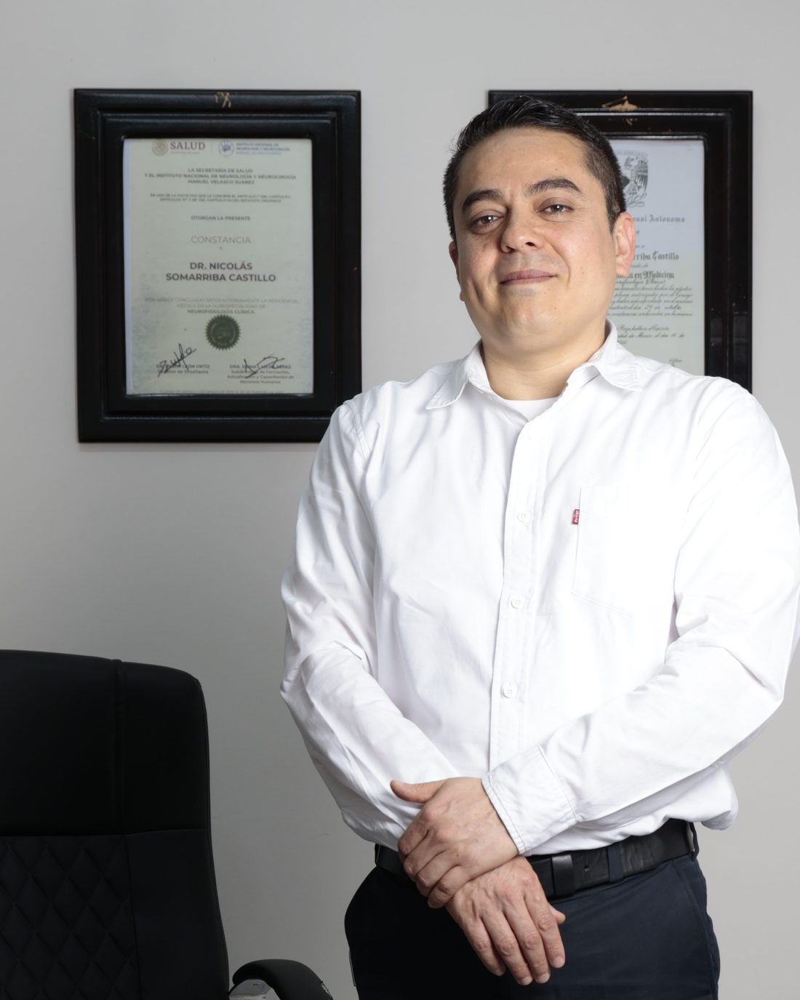

Trastornos del movimiento
Evaluación de temblores, piernas inquietas y alteraciones de la coordinación.
- Temblores
- Piernas inquietas
- Coordinación y escritura
Especializados en el diagnóstico y atención de enfermedades del sistema nervioso central, aquí en Estelí.

Muchas molestias frecuentes tienen su origen en el sistema nervioso. Una evaluación neurológica permite identificar la causa y orientar el tratamiento.
Evaluación de temblores, piernas inquietas y alteraciones de la coordinación.
Hormigueo, adormecimiento y otras molestias que pueden tener su origen en los nervios.
Mareos e inestabilidad, cuando el origen puede estar en el sistema nervioso.
Chequeos y control de factores, como la hipertensión, que influyen en la salud del cerebro.
¿Se reconoce en alguno de estos síntomas? No necesita un diagnóstico para pedir una cita: la consulta sirve justamente para salir de dudas.
Llamar para agendar¿Quiere entender mejor estos síntomas? Aprenda con nosotros
Un paciente informado reconoce a tiempo las señales de su cuerpo. Estas son algunas de las preguntas que el doctor explica en sus publicaciones.
Ante cualquiera de estas señales, de forma repentina, cada minuto cuenta: acuda de inmediato a emergencias.
Mito. Un temblor puede aparecer por distintas razones, y la forma en que ocurre da pistas importantes para el diagnóstico.
Puede deberse a que un nervio se comprime, por ejemplo por la postura. Si se repite con frecuencia o no se quita, vale la pena consultarlo.
La escritura aporta información sobre la coordinación y el control de los movimientos. Algo tan sencillo como escribir puede ser parte del examen.
El cerebro trabaja con el oído interno, la vista y el sistema nervioso para mantenernos estables. Cuando uno de ellos se altera, pueden aparecer mareos.
La necesidad de mover las piernas, sobre todo en reposo o por la noche, es una molestia que tiene nombre y se puede evaluar.
Dormir bien, controlar condiciones como la hipertensión, mantenerse activo y chequearse cuando hace falta, no sólo cuando aparecen los síntomas.
El doctor comparte contenido para entender mejor su salud. Síganos para no perderse ninguna publicación.
Ver más en InstagramNeurología y neurofisiología bajo un mismo techo: la evaluación y los estudios diagnósticos se coordinan sin ir y venir.
Estudios diagnósticos con equipos especializados para entender con precisión qué ocurre en el sistema nervioso.
Le explicamos cada estudio antes de realizarlo: en qué consiste, cómo prepararse y qué esperar.
Atención especializada en Estelí, de lunes a sábado.
«Precisión diagnóstica, excelencia médica y compromiso humano».
Brindar atención médica especializada en neurología y neurofisiología clínica, mediante una evaluación integral, diagnósticos precisos y tratamientos basados en evidencia científica, utilizando tecnología especializada y ofreciendo una atención humana, ética y personalizada, orientada a mejorar la salud neurológica y la calidad de vida de nuestros pacientes.
Ser una clínica de referencia y prestigio en Nicaragua en el campo de la neurología y la neurofisiología clínica, reconocida por su excelencia médica, precisión diagnóstica, innovación tecnológica y compromiso con el bienestar de los pacientes, manteniendo los más altos estándares de calidad, ética profesional y actualización científica.
Si su médico le indicó un estudio, aquí encontrará en qué consiste, cómo prepararse y qué esperar. Seguir la preparación ayuda a obtener un registro de buena calidad.
Unos pequeños electrodos sobre el cuero cabelludo registran, en tiempo real, la actividad eléctrica que produce el cerebro, despierto y dormido. No es invasivo y no duele.
El día anterior al estudio:
¿Sabía que…? El electroencefalograma no envía corriente ni «lee los pensamientos»: sólo registra la actividad eléctrica que el cerebro ya produce, comparando zonas equivalentes de los dos lados de la cabeza.
Sospecha de epilepsia o de crisis epilépticas
Otras indicaciones
La neuroconducción mide qué tan rápido viajan las señales por los nervios; la electromiografía registra la actividad eléctrica de los músculos. Juntas ayudan a ubicar dónde está el problema: en las neuronas motoras de la médula espinal, en las raíces nerviosas de la columna, en los plexos nerviosos, en los nervios o en los músculos.
¿Sabía que…? Durante la electromiografía podrá escuchar a su músculo: la señal también va a un altavoz, y ese sonido le ayuda a saber cuánta fuerza está haciendo cuando le pedimos que se mueva un poco más o un poco menos.
Síntomas que pueden venir de los nervios
Problemas que ayuda a estudiar
Los nervios y los músculos pueden afectarse por causas muy distintas: metabólicas, falta de vitaminas o nutrientes, tóxicas, inflamación de los vasos sanguíneos (vasculitis), inmunológicas, tumorales o infiltrativas, entre otras.
Mientras usted duerme, se registran la actividad del cerebro, la respiración, el ritmo del corazón, los movimientos de los músculos y el oxígeno en la sangre. Sirve para evaluar el sueño y diagnosticar trastornos de la respiración al dormir, sobre todo la apnea obstructiva del sueño. La titulación de CPAP busca la presión de aire adecuada para mantener abiertas las vías respiratorias mientras duerme.
Señales durante el sueño
Señales durante el día
También se considera en personas con presión alta difícil de controlar, o con enfermedades del corazón o arritmias cuando se sospecha apnea del sueño. Si tiene alguna de estas señales, una valoración médica permite decidir si necesita el estudio.
Si tiene dudas antes de su estudio, llame a la clínica: le explicamos el procedimiento con calma.
Sabemos que acudir al neurólogo puede generar preocupación. Le explicamos cómo es el proceso para que llegue con tranquilidad.
Llame a la clínica en horario de atención y elija el día que le convenga.
5794-5641Le orientamos sobre qué traer el día de su consulta o estudio.
Estamos en el costado norte de la COTRAN Sur, en Estelí.
Abrir en WazeAtendemos de lunes a sábado.
| Lunes | 8:00 a. m. – 6:00 p. m. |
| Martes | 8:00 a. m. – 6:00 p. m. |
| Miércoles | 8:00 a. m. – 6:00 p. m. |
| Jueves | 8:00 a. m. – 4:00 p. m. |
| Viernes | 8:00 a. m. – 4:00 p. m. |
| Sábado | 8:00 a. m. – 12:00 m. |
| Domingo | Cerrado |
Costado norte de la COTRAN Sur
Estelí, Nicaragua
Le recomendamos usar Waze: en Google Maps la ubicación puede aparecer de forma incorrecta.
Comuníquese con la clínica de lunes a sábado, en horario de atención.